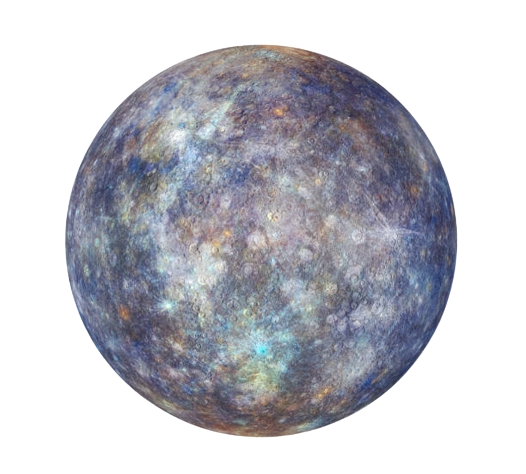

- Mercúrio é o planeta mais próximo do Sol em nosso sistema solar.
- Ele não possui uma atmosfera significativa, o que o torna extremamente quente durante o dia e incrivelmente frio à noite.
- Um dia em Mercúrio (um rotação completa) dura aproximadamente 59 dias terrestres, enquanto um ano
(uma órbita completa ao redor do Sol) dura apenas cerca de 88 dias terrestres.
- Mercúrio é o segundo menor planeta do sistema solar, superado apenas por Plutão.
- Sua superfície é marcada por crateras e tempestades de poeira devido à falta de uma atmosfera protetora.
- A temperatura em Mercúrio pode atingir cerca de 430 graus Celsius durante o dia e cair para cerca de -180 graus Celsius à noite.
- Foi visitado por apenas uma sonda da NASA, a MESSENGER, que estudou o planeta de 2004 a 2015.
- Mercúrio recebeu esse nome em homenagem ao deus romano da velocidade e do comércio, devido à rapidez de seu movimento aparente no céu.
- A falta de uma atmosfera densa também significa que Mercúrio não tem um céu azul, como a Terra. Em vez disso, o céu aparece preto durante o dia.
- É um dos cinco planetas visíveis a olho nu da Terra e pode ser observado no céu da manhã ou da tarde.
|

|